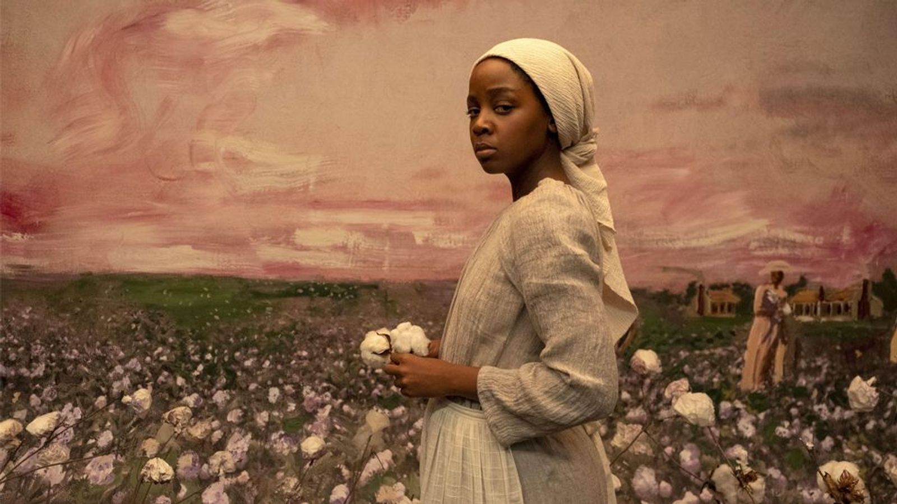
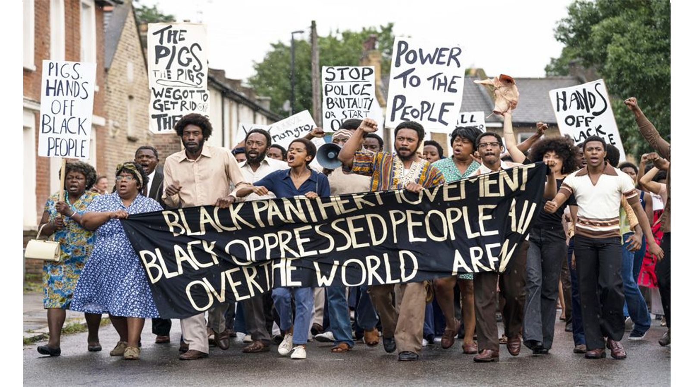
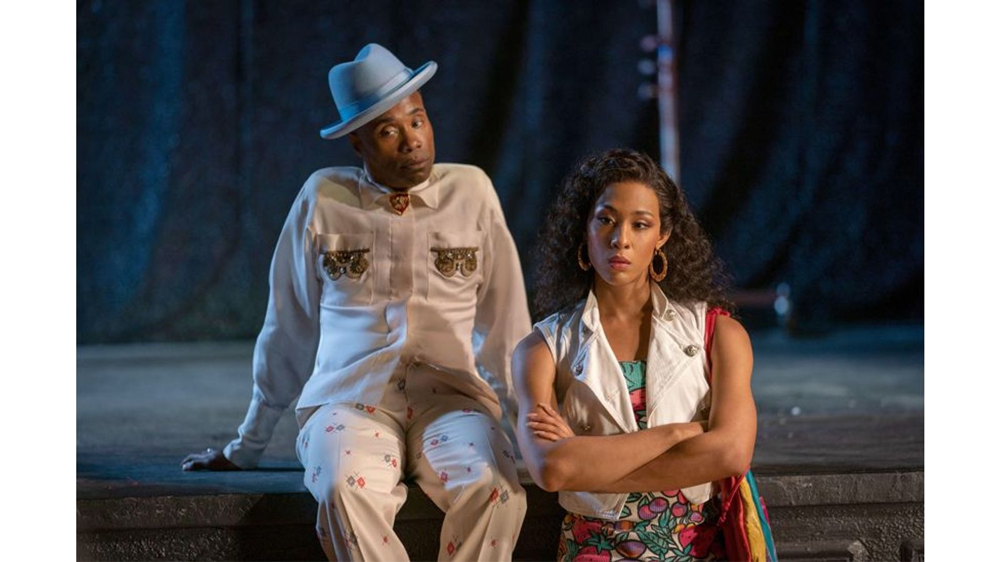
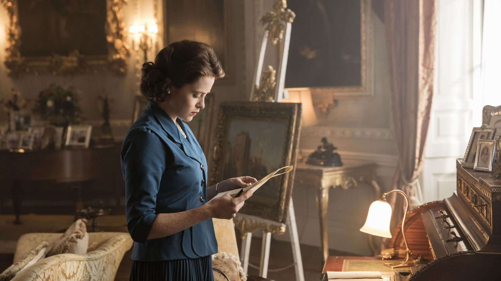

Historical drama and TV's reckoning with the past

Far from being a comforting vision of the past, the best period drama reclaims history for now. That's because these clear-eyed series are rooted in the real world, argues Caryn James.
Continue reading
Period pieces are often thought of as soothing escapes to a simpler past. Not so in the 21st Century. Discussing Small Axe, his politically-charged, revisionist series about West Indians in Britain from the 1960s through to the '80s, Steve McQueen told the BFI, "That's what art can do: rewrite history in the way it should be written... That's what you do with your TV programmes."
McQueen's assertion could be a mantra for the best, most ambitious television dramas today. From the quietly subversive The Crown and Downton Abbey to the jolting, radical Small Axe, The Underground Railroad and Pose – all on BBC Culture's poll of the 100 greatest series of the 21st Century – television is correcting history's distortions in matters of race, gender, class and power. The gay footman Thomas in Downton and the runaway slave Cora in The Underground Railroad are presented to us as avatars of change. And now is an especially rich moment for series to reclaim the past. Previously muted voices from black, gay and transgender creators are offering new, more authentic ways of seeing their histories. Their series are clear-eyed period pieces for the present.

In The Underground Railroad, Cora (Thuso Mbedu) attempts to break free from slavery in the deep South (Credit: Alamy)
Barry Jenkins'The Underground Railroad and McQueen's Small Axe make the point that racism, whether in the antebellum American South or the UK's recent past, has been and remains deeply embedded in the fabric of society. It's notable that the series' creators are also two of today's finest filmmakers, taking full advantage of what television has to offer: the time to delve into thorny social issues from multiple angles, and the ability to reach a large global audience through drama that engages us with the personal lives and loves of characters over years.
In the dazzling, imaginative Underground Railroad (number 59 in the poll), based on Colson Whitehead's novel, the metaphorical route leading escaped slaves to freedom becomes a physical railroad line. Artistic licence becomes a way to access harsh truths.
Because we've been afraid to re-experience some of these traumas… we've inadvertently almost avoided some of this history – Barry Jenkins
The first instalment of the series is the most graphic, showing an enslaved person punished by being burned alive. Jenkins carefully modulates the violence he depicts, and includes scenes of lyrical beauty. But he also uses the power of the screen to immerse his audience in the characters' worst experiences. It is not enough to acknowledge the horrors of slavery in an abstract way. Cora (Thuso Mbedu), escapes from the plantation, only to find herself in an apparently better world that cannot last, as a slave hunter pursues her into hiding and eventually out of a town in which lynched bodies of black people hang on trees lining the road.
Through Cora and the other enslaved characters, Jenkins creates a tragedy that exists on both an immediate, intensely personal level and on a grand, historical scale. Nothing in flat, school-room stories of slavery can compete with this harrowing vision on screen. And the 2021 series arrives at a time when some school boards in the US are resistant to teaching the history of racism at all.
Jenkins' acknowledged purpose is to reclaim the truth of the past as a way of moving forward. In an interview with Buzzfeed, he pointedly tied his series to the Trump years and the distortions that history has passed down. While he was working on the series, he said, "There was this president who kept talking about 'Make America Great Again'... I realised that there was this vacuum that kept travelling that needed to be filled. Because America hasn't always been great." He added, "Because we've been afraid to re-experience some of these traumas, because we've been afraid of triggering people to re-experience that trauma, we've inadvertently almost avoided some of this history."

UK director Steve McQueen's Small Axe – Mangrove tells a true story of the police harassment that led to a historic court case in the 1970s (Credit: Alamy)
With a more directly realistic style, McQueen's searing Small Axe (number 51 in the poll) achieves the same goal, reconceiving a past that echoes through to the present. Four of the five independent instalments in the series are fact-based stories that reposition people from recent decades in a new, heroic light. It is remarkable, and deliberate, that those stories resonate so powerfully with the Black Lives Matter movement and calls for police reform today.
A rush of authenticity
In Mangrove, one of those heroes is Frank Crichlow (Shaun Parkes) whose restaurant in London was repeatedly the subject of police harassment in the late 1960s and early '70s, leading to street protests, police violence against the activists, and charges against the protest leaders, who became known as The Mangrove Nine. In Red, White and Blue, John Boyega plays the real-life Leroy Logan, who joined London's Metropolitan Police in 1983, defying the racist atmosphere to try to change it from within. Together, the five stories tell us that the racism on screen is not due to an occasional rogue action or racist cop, but evidence of a deeply accepted social bias.
"These films should have been made 35 years ago, 25 years ago, but they weren't," McQueen said in the BFI interview. "There's no way anyone would have given me, or anybody else... money at that time to make a film about The Mangrove Ninethe Mangrove Nine. You were not welcome."
These creators have cracked the door a bit wider in the television industry, and expanded the audience's perspective in a major way
While racism went mostly unexplored on TV for many decades, there were rare exceptions. The 1977 miniseries Roots earned one of the biggest television audiences ever, and brought the brutality of slavery into more than 100 million homes. But it didn't expand opportunities for black actors, writers or directors. And except for the writer, Alex Haley, whose book Roots was based on, behind the scenes, the major creators were white.

Pose is set in the world of 1980s New York drag balls, tackles the 1990s Aids crisis, and resonates with the present day (Credit: Alamy)
McQueen and Jenkins, black artists reclaiming black history, and the gay and trans creators of Pose (number 62), about the LBGTQ+ world in the late 20th Century, are advocating for change while also representing at least some movement toward that change themselves. Although a handful of voices from disenfranchised groups aren't enough, these creators have cracked the door a bit wider in the television industry, and expanded the audience's perspective in a major way.
Steven Canals brought his original idea for Pose to Ryan Murphy. Those two gay co-creators (along with Brad Falchuk were joined by the trans producers Janet Mock and Our Lady J, and a cast of gay and trans actors, bringing a bold rush of LGBTQ+ authenticity to the television landscape. As the title suggests, Pose began with a focus on the world of drag balls in New York City. Over its three seasons, spanning 1987-1996, it increasingly focused on the Aids crisis and gay rights. Its main and most beloved characters, the ballroom host and father figure Pray Tell (Billy Porter) and the trans, maternal Blanca (Mj Rodriguez) both contracted HIV. In the final season, Pray and Blanca call out government neglect of black people in an experimental Aids drug trial, a racial crisis within a health crisis. Like Small Axe, Pose uses recent decades to create resonance with inequalities that remain today.
Reshaping history doesn't always mean being a flame-thrower. Some of the most elegantly escapist series of the 21st Century question the power structures that support the characters and the sumptuous settings we love. The Crown (number 16 in the BBC Culture poll) is an interpretation of real events that takes a humanising approach to the monarchy. From the series' start, when we see Princess Elizabeth (Claire Foy) as a young woman in 1947, Peter Morgan's series speculates about what happened behind the public image, and with enormous sympathy takes us into her private life. We see all the personal insecurities and tensions of any family, magnified by an enormous weight of responsibility to the country.

An interpretation of real events, The Crown depicts a changing British monarchy through the decades (Credit: Alamy)
That sense of duty is shown as even stronger in the middle-aged Queen (Olivia Colman) in seasons three and four. But so is the portrayal of how emotionally damaged her children may be, particularly Charles (Josh O'Connor). By the time the series arrives in the 1980s, and the family is seen choosing Diana (Emma Corrin) to be Charles's wife, presented as a cold-blooded decision all around, the mood of the country we see on screen has shifted. The monarchy's hold on power is still firm, but not in the unquestioned way it was when Elizabeth inherited the crown in 1952. Her role and her authority are increasingly challenged by striking miners, politicians like Margaret Thatcher (Gillian Anderson), and a less deferential press.
The ultrasharp Mad Men (number two in the poll), set in the very different and more overtly vicious world of US advertising, charts a similar, realistic cultural shift, far from a comforting vision of the past. As the timeline moves from 1960 to 1971, each season focuses more on the sexism its women characters endure, from Peggy's (Elisabeth Moss) need to hide her pregnancy to the way Joan (Christina Hendricks) is used as a sex object by the men around her, until she finally asserts some power and business acumen of her own. Don Draper (Jon Hamm) is ever the handsome charmer, but the world around him is leaving his type behind.
Even the sublime Downton Abbey (number 36), known as the ultimate in blissful escapism, is more rooted in the real world than it gets credit for. Its characters know that the old, hierarchical class order is shifting under their feet. The order itself threatens them in the very first episode, when the heir to Downton, who is also Mary Crawley's (Michelle Dockery) fiancé, dies in the Titanic. Of course a woman cannot inherit their beloved Downton. Lucky for them she falls in love with the new heir, Matthew (Dan Stevens).

Downton Abbey, often considered escapist TV, tells us some interesting truths about class and power (Credit: Alamy)
But sympathising with the Crawleys and their downstairs staff isn't the same as believing in inherited wealth and power. Spurred by the reality of World War One, the story deals with the gradually shifting mores of a new world. Thomas (Rob James-Collier) still hides his homosexuality, which was then illegal, and in one episode is hauled in by the police. Perhaps fancifully, the open-minded Crawleys not only don't dismiss him; eventually they make him the new butler. More realistically, in the 1920s cousin Rose (Lily James) falls in love with a black jazz musician, though that relationship is doomed by the prejudices they face.
These themes of sexuality and race are not sops to an enlightened 21st-Century audience, but signals that the world is changing. The characters are less aware of how significant those changes will be than we are. As 21st-Century viewers, these enticing, truth-telling period dramas are telling us more and more about who we are – and how we got to the reality of today.
Go Back